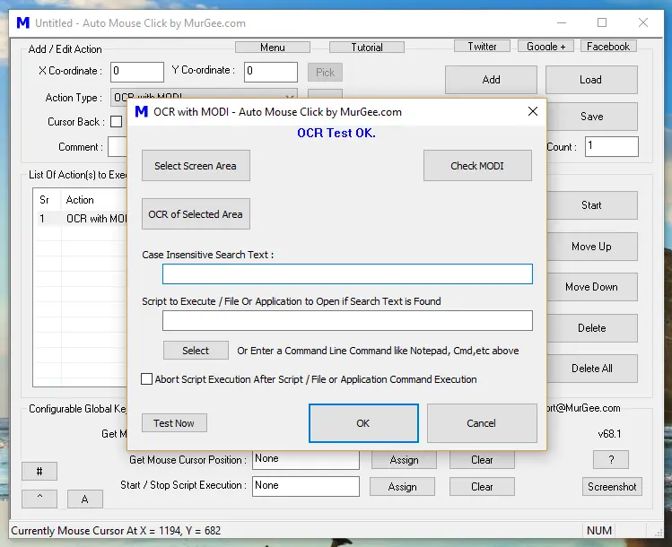
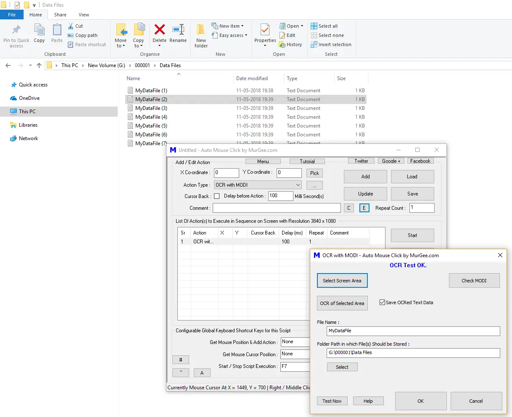

Automated OCR and Script Execution
Now you can do Fast OCR of any Rectangular Area of your Computer Screen easily and quickly with Auto Mouse Click by MurGee.com. You can even Schedule or Script Automated OCR to be performed on selected Rectangular Area. The OCR is performed by the OCR with MODI Action and just like any other Macro Action in the Script, it can be repeated with the help of Repeat Count field. You can even Save Text Extracted from the OCR Macro Action to a Text File.

How to use OCR with MODI Action in a Script ?
In order to use this OCR Action in your Script, you need to have the OCR Engine Installed. Make sure you do have the OCR Engine Installed and your OCR Action Screen looks like as displayed in the Screenshot to the Right hand side. Once you do have the OCR Engine Installed, follow the given below procedure and setup the Macro Action to do Automated OCR, search for Text and Execute another Macro Script or Application.
- Click on Select Screen Area button to select a Rectangular Area on which you want to perform OCR and Extract Text.
- Now Click on OCR of Selected Area to perform OCR of the selected Rectangular Area and display Text Extracted. Once you are happy with the Text Extracted from the selected Rectangular Area, proceed ahead to the Next Step.
- Now Enter the Text you want to be Searched in the Selected Rectangular Area by doing OCR (Optical Character Recognition).
- Now to Ensure that this Macro Action can successfully do OCR of selected Rectangular Area and Search for the Text specified, do Click on the Test Now button and review the Results.
- Once you are happy with Test Results, Select another .mamc file to be Executed, or an Application to be launched or a Document to be opened when OCR is performed and Search Text is found.
- To Ensure that this Macro Action can successfully do OCR of selected Rectangular Area and Search for the Text specified, and Execute Another Macro Script or Launch Application or run your desired Command, Click on the Test Now button and review the Results.
- Optionally Select the Checkbox which allows you to Abort Script Execution so that whenever the Search Text is Found, the Script does not performs OCR Again.
Extract Text with OCR and Save Text as File
You can also use the OCR Action to Save Extracted Text as Text File. The given below Screenshot displays how to configure the OCR Action to Save Text File in a Folder. Note that Unique File Names are generated Automatically so that Files can be distinguished easily.

Watch Video Tutorials of this Windows Automation Software utility titled Auto Mouse Click Application for Windows 10, Windows 8.1, Windows 8, Windows 7 and other Microsoft Operating Systems.